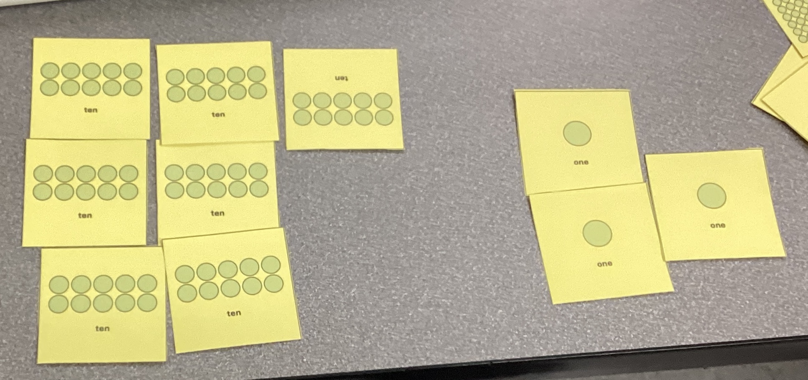
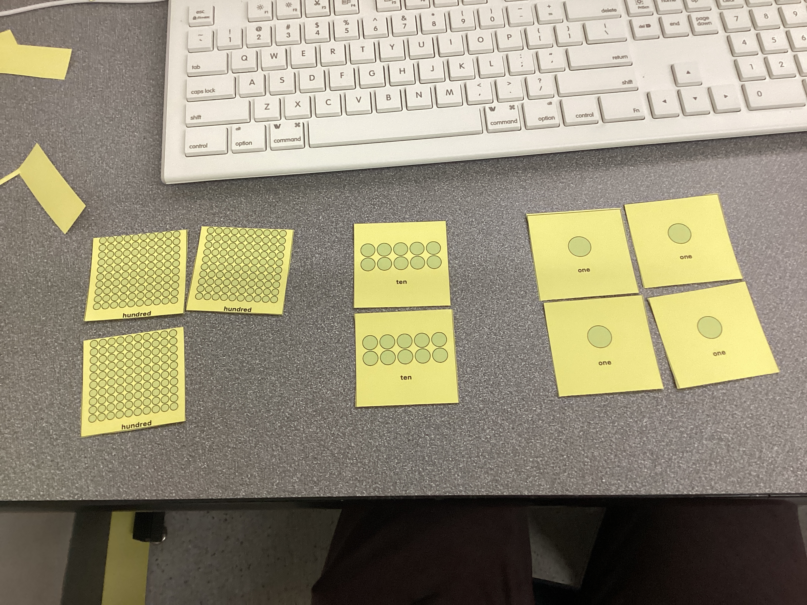
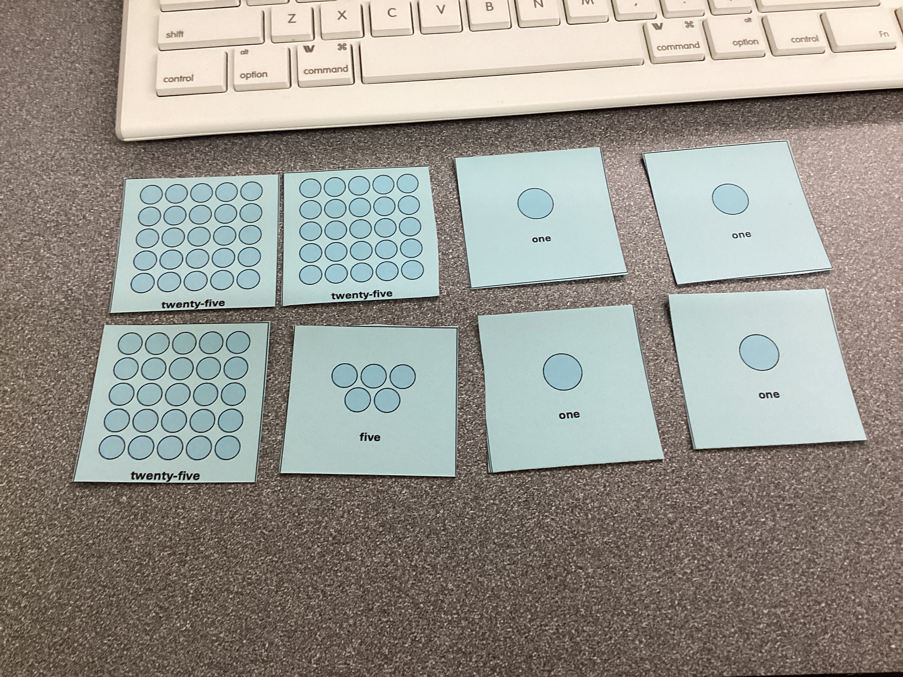

Data Movement and Types of Networks
Project Introduction
This project was focused on understanding how a LAN works, how data travels between devices on a LAN, and introducing binary, decimal, and hexadecimal numbers and their uses in networking applications.
Planning and Design
The main objectives for this project were to explore how Local Area Networks (LANs) enable communication between devices that are in the same environment (house, school, building, etc.), showcase how IP and MAC addresses are used to identify devices (as well as learning about their differences), and to learn to use ICMP tools to test connections and find details about devices on the LAN.
Components of a LAN and Representing them as Parts of a City
| Component | Purpose | Analogy |
|---|---|---|
| Endpoint Devices (Computers, Printers, Phones, etc. | Endpoint Devices are devices that send or receive data across a network. They are the ones that use the network. | Houses in the city who communicate with other houses |
| Ethernet Cables and Wi-Fi | The physical (Ethernet) or wireless (Wi-Fi) connections that allow data to move between devices on a network. | Roads that interconnect everything |
| Switch | A device that connects multiple endpoint devices within the same network and directs | Roundabout that guides traffic and ensures that everyone goes to the right location |
| Router | Post office that decides which mail should stay local (within LAN) and should be mailed to other cities (Internet) | |
| Data | The letters and packages that people mail to each other within the city and outside the city |
Important LAN Terms
| Term | Definition |
|---|---|
| LAN (Local Area Network) | A network that connects endpoint devices within 1 building/campus and lets them share printers, files, and internet connections efficiently over the LAN |
| Host | Any device (computer, printer, phone, etc.) that can send or receive data on the network. Each host has a unique IP address assigned by the router. |
| Switch | A device that connects multiple devices on the LAN. It works by learning the MAC address (hardware identifier unique to each NIC) of each device plugged in. When data comes in, the switch forwards it exclusively to the intended device. |
| Router | A device that connects the LAN to other networks and the Internet. It uses IP addresses to send incoming data to the intended device. |
| Packet | Segmented data that contains the sender's IP (return address), receiver's IP (destination), and the "payload" (the actual message/data). When packets arrive, the endpoint device reassembles it into complete data. |
| IP Address | Unique identifier for endpoint devices on a network. Different IP address ranges mean different things (192.168.x.x and 10.x.x.x vs 169.254.x.x) |
Diagram of My House's LAN

In my house, almost everything is connected via Wi-Fi, except for the switch and Home Assistant Server that handles all of the smart home tasks in my house. Everything is directly connected to the router, which communicates with the internet and cloud services.
OSI Model - The Seven Layers of Networking
Networks are often represented by the OSI model, which consists of seven categories that encompass all networking-related tasks. They are:
| Layer | Name | Description | Analogy |
|---|---|---|---|
| 7 | Application | An email client, web browser, or any internet-connected application (Spotify, Adobe Creative Cloud, Safari, etc. | Human-computer interaction layer. |
| 6 | Presentation | Translates data (encryption, compression) | Ensures data is in a usable form. |
| 5 | Session | Manages the connection | Maintains connections and is responsible for controlling parts and sessions. |
| 4 | Transport | Breaks data into segments | Transmits data using transmission protocols such as TCP (Transmission Control Protocol) and UDP (User Datagram Protocol) |
| 3 | Network | Routes packages using IP addresses | Decides which physical path the data will take. |
| 2 | Data Link | Transfers frames via MAC (media access control) addresses | Defines the format of data on the network. |
| 1 | Physical | Wires, signals, routers, switches, Wi-Fi | Transmits raw bit streams over the physical medium. |
OSI Cards Diagram
The following images showcase an activity about understanding how real-world examples are categorized into the OSI layers:
First Attempt

First attempt at matching OSI cards with example and ordering them correctly.
Correct Organization

Correct organization of OSI cards with their examples.
OSI vs TCP/IP Model
| TCP/IP Layer | Corresponding OSI Layers | Functions |
|---|---|---|
| Application | 7 (Application), 6 (Presentation), 5 (Session) | Apps, HTTP, FTP |
| Transport | 4 (Transport) | TCP/UDP, data segmentation |
| Internet | 3 (Network) | IP addressing, routing |
| Network Access | 2 (Data Link), 1 (Physical) | Physical and Data Link |
| -------------- | -------------------------------------------- | -------------------------- |
Representing Numbers with Different Bases
To demonstrate how number bases work, cards representing base-10 (decimal), base-2 (binary), and base-5 were provided. The task was to represent different numerical values with the different bases.
Base 10
501 = 5 * 102 + 0 * 101 + 1 * 100 = 500 + 0 + 1 = 401

473 = 4 * 102 + 7 * 101 + 3 * 100 = 400 + 70 + 3 = 473 
324 = 3 * 102 + 2 * 101 + 4 * 100 = 300 + 20 + 4 = 324 
Base 5
84 (Decimal) = 3 * 52 + 1 * 51 + 4 * 50 = 300 + 50 + 4 = 314 (Base-5) = 84 (Base-10) 
37 (Decimal) = 1 * 5² + 2 * 5¹ + 2 * 5⁰ = 25 + 10 + 2 = 122 (Base-5) = 37 (Base-10)

Technical Development
In this section of the project, an Ubuntu VM was used to apply and verify networking concepts in the CLI.
Using Ubuntu to Convert Between Binary and Decimal
Converting between binary and decimal by hand is very difficult and tedious. Thankfully, the bc CLI tool can be used to perform the conversion.
To convert from binary to decimal, the command echo "obase=10; ibase=2; [Insert Binary Number]" | bc and echo "obase=2; 45" | bc can be used to convert from binary to decimal and from decimal to binary, respectively. Below is a breakdown of these commands:
| Part | Meaning |
|---|---|
| echo | Prints text |
| "obase=10; ibase=2; 101101" | The conversion formula — it tells the calculator what number base to use. |
| obase | “Output base” — the numbering system you want the result in. |
| ibase | “Input base” — the numbering system your starting number is in. |
| bc | The basic calculator program built into Ubuntu — it performs the conversion. |
Below is what these commands look like in the Ubuntu CLI:

Representing Network Information as Hexadecimal and Binary
Although decimal is easily readable by humans, computers process information in binary. Any time a computer works with decimal numbers, it first has to convert it to binary in order to do any operations with it. To see Ubuntu's IP address in binary, ipcalc must be installed with sudo apt install ipcalc -y. After installing it, run ipcalc [IP address] to display network information in binary.

Since hexadecimal can represent up to the number 15 in each character, it can store more information in less space when compared with decimal and especially compared to binary. To view network information in hexadecimal form in Ubuntu, the command printf '%02X%02X%02X%02X\n' 192 168 64 2, where 192, 168, 64, and 2 should be replaced with the digits from your IP address (found with ifconfig).
The output was C0A84002. Breaking this down:
- C0 = 192
- A8 = 168
- 40 = 64
- 02 = 2